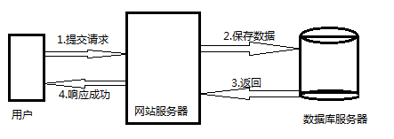
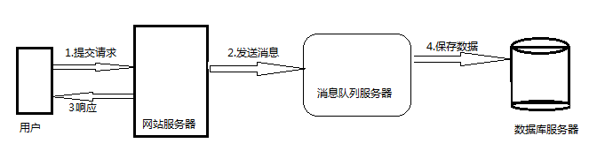
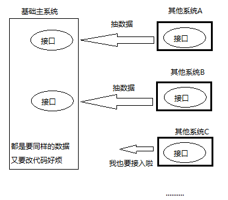
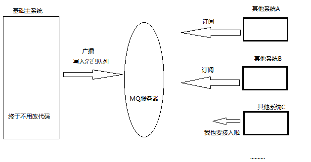
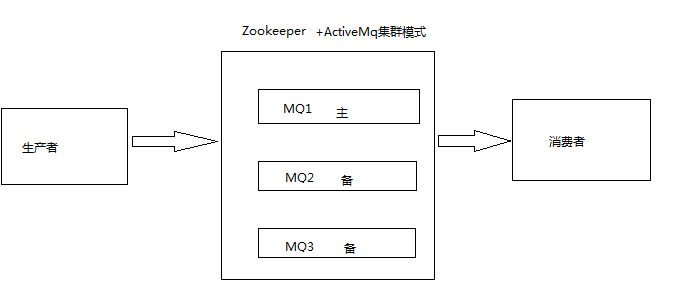

我们先来看下传统的服务器接收处理请求的流程

如上图，在不使用消息队列服务器的时候，用户的请求都直怼数据库，在高并发的情况下数据库压力剧增，不仅使得响应速度变慢，还可能因此而挂掉数据库，导致用户页面直接报错，项目经理找上门，然后*#！%@！#** ......（PS：尽管是某服务挂了，但某宝的用户页面提示信息一定会甩锅给网络不通哦~）
我们再来看加入消息队列服务器之后的接收处理请求的流程会发生什么变化

如上图，在使用消息队列之后，即使在高并发的情况下用户的请求数据发送给消息队列之后立即返回，再由消息队列的消费者进程从消息队列中获取数据，异步写入数据库。由于消息队列服务器处理消息速度比数据库要快很多，因此响应速度（用户体验感）得到大幅改善。
因此我们可以得出消息队列具有很好的流量削峰作用的功能——即通过异步处理，将短时间高并发产生的事务消息存储在消息队列中，从而削去高峰期的并发事务。如在某些电商平台的一些秒杀活动中，合理使用消息队列可以抵御活动刚开始大量请求涌入对系统的冲击。
因为用户请求数据写入消息队列之后就立即返回给用户了，但是请求数据在后续的业务校验、写数据库等操作中可能失败。因此使用消息队列进行异步处理之后，需要适当修改业务流程进行配合，比如用户在提交订单之后，订单数据写入消息队列，不能立即返回用户订单提交成功，需要在消息队列的订单消费者进程真正处理完该订单之后，甚至出库后，再通过电子邮件或短信通知用户订单成功，以免交易纠纷。这就类似我们平时手机订火车票等。
我看也先来看看传统的系统数据传输模式

如上图，主系统和其他系统的耦合性太强，都是直接调用，稍微有一点改动或者新增模块，双方都得改代码，过于麻烦
然后，我们再来看看加入了消息队列之后，系统的结构会发生什么变化

如上图，我们知道如果模块之间不存在直接调用，那么新增模块或者修改模块就对其他模块影响较小，这样系统的可扩展性无疑更好一些。
消息队列使利用发布-订阅模式工作，消息发送者（生产者）发布消息，一个或多个消息接受者（消费者）订阅消息。 从上图可以看到消息发送者（生产者）和消息接受者（消费者）之间没有直接耦合，消息发送者将消息发送至分布式消息队列即结束对消息的处理，消息接受者从分布式消息队列获取该消息后进行后续处理，并不需要知道该消息从何而来。对新增业务，只要对该类消息感兴趣，即可订阅该消息，对原有系统和业务没有任何影响，从而实现网站业务的可扩展性设计。
另外为了避免消息队列服务器宕机造成消息丢失，会将成功发送到消息队列的消息存储在消息生产者服务器上，等消息真正被消费者服务器处理后才删除消息。在消息队列服务器宕机后，生产者服务器会选择分布式消息队列服务器集群中的其他服务器发布消息。
除发布订阅模式之外，消息队列还有其他的传输模式
点对点模型
基础模型中，只有一个发送者、一个接收者和一个分布式队列。
生产者消费者模型
如果发送者和接收者都可以有多个部署实例，甚至不同的类型；但是共用同一个队列，这就变成了标准的生产者消费者模型。在该模型，三个角色一般称为生产（Producer）、分布式队列（Queue）、消费者（Consumer）。
中途小结：消息队列对系统的并发处理的能力和扩展性有所提升
可用性降低： 在加入MQ之前，你不用考虑MQ服务器挂掉的情况，引入MQ之后你就需要去考虑了，可用性降低。
复杂性提高： 加入MQ之后，你需要保证消息没有被重复消费、处理消息丢失的情况、保证消息传递的顺序性等问题。因此需要考虑的东西更多，系统复杂性增大。
数据一致性：消息队列带来的异步确实可以提高系统响应速度，但是，万一消息的真正消费者并没有正确消费消息怎么办？这样就会导致数据不一致的情况了。
引入消息队列后，系统的可用性下降。实际项目中发送MQ消息，如果不做集群，其中mq机器出了故障宕机了，那么mq消息就不能发送了，系统就崩溃了，所以我们需要集群MQ，当其中一台MQ出了故障，其余的MQ机器可以接着继续运转，在生产中，没人使用单机的消息队列。如果有，那肯定为了用而用（显得技术复杂一下，好忽悠多收点钱），对于这个问题，需要对MQ集群技术有比较深刻的理解，各种消息中间件的集群方式不同，下面以ActiveMq的集群为例（Zookeeper+ActiveMq）,先看图

这种应用场景叫做master/slave（主/备模式），在这种场景下，我有三台服务器（主和备），任何情况下，只有“主”在工作，“备”是在主出现故障时，接替“主”来提供服务。在zookeeper的支持下，这一过程是这样实现的，Zookeeper提供目录和节点的服务，当我的三台服务器启动时，会在zookeeper的指定目录下创建对应自己的临时节点（这个过程称为“注册”），所谓临时节点，是靠心跳（定时向zookeeper服务器发送数据包）维系，当主服务器出现故障（无法向zookeeper服务器发送数据包，zookeeper会删除改临时节点。服务器向zookeeper注册时，zookeeper会分配序列号，我们认为序列号小的那个，就是“主”，序列号大的那个，就是“备”。
当我们的客户端（通常是web server）需要访问服务时，需要连接zookeeper，获得指定目录下的临时节点列表，也就是已经注册的服务器信息，获得序列号小的那台“主”服务器的地址，进行后续的访问操作。以达到“总是访问主服务器”的目的。当“主”服务器发生故障，zookeeper从指定目录下删除对应的临时节点，同时可以通知关心这一变化的所有客户端，高效且迅速的传播这一信息。当下个请求来的时候，还是连接zookeeper，但是此时其实是访问备用的MQ。
1.如何保证消息不被重复消费呢？
要回答好这个问题，首先要知道为什么消息会被重复消费，大多都是因为网络不通导致，确认信息没有传送到消息队列，导致消息队列不知道自己已经消费过该消息了，再次将该消息分发给其他的消费者。所以解决问题的方式有如下三种思路
1.如果消息是做数据库的插入操作，给这个消息做一个唯一主键，那么就算出现重复消费的情况，就会导致主键冲突，避免数据库出现脏数据。
2.如果你拿到这个消息做redis的set的操作，不用解决，因为你无论set几次结果都是一样的，set操作本来就算幂等操作。
3.如果上面两种情况还不行，准备一个第三服务方来做消费记录。以redis为例，给消息分配一个全局id，只要消费过该消息，将<id,message>以K-V形式写入redis。那消费者开始消费前，先去redis中查询有没消费记录即可。
2.如何保证消息的可靠性传输呢？
其实这个问题是第一个问题的扩展，换而言之，我们要保证可靠性传输，其实就是保证防止生产者弄丢数据、消息队列弄丢数据、消费者弄丢数据而已
其实这些问题早在中间件开发者已经考虑到了，也提供了一些可配置的文件给我们自行设定相关参数，消息队列一般都会持久化到磁盘这个不用担心，然后生产者数据丢失的话MQ的事务会回滚，可以尝试重新发送，消费者丢的的话一般都是采用了自动确认消息模式导致消费信息被删，只要修改为手动确认就行了，也就是说消费者消费完之后，调用一个MQ的确认方法就行了
3.如何保证从消息队列里拿到的数据按顺序执行？
通过算法，将需要保持先后顺序的消息放到同一个消息队列中，然后只用一个消费者去消费该队列。
（1）rabbitmq：拆分多个queue，每个queue一个consumer，就是多一些queue而已，确实是麻烦点；或者就一个queue但是对应一个consumer，然后这个consumer内部用内存队列做排队，然后分发给底层不同的worker来处理
（2）kafka：一个topic，一个partition，一个consumer，内部单线程消费，写N个内存queue，然后N个线程分别消费一个内存queue即可
4.如何解决消息队列的延时以及过期失效问题？有几百万消息持续积压几小时，怎么解决？
这个问题是生产环境出现事故后的，考察你如何快速的解决问题，，消息队列的延迟和过期失效是消息队列的自我保护机制，目的是为了防止本身被挤爆，当然是可以关闭保护，比如当某个消息消费失败5次后，就把这个消息丢弃等，尽量不要关掉保护机制，那么问题来了，那些被丢弃的消息难道就不要了吗？其实并不是，我们可以针对该业务，查询出来将丢失的那批数据，写个临时程序，一点一点的查出来，然后重新灌入mq里面去，把丢的数据给他补回来。
5.数据是通过push还是pull方式给到消费端，各自有什么弊端？
Push模型实时性好，但是因为状态维护等问题，难以应用到消息中间件的实践中,因为
在Broker端需要维护Consumer的状态，不好适用于Broker去支持大量的Consumer的场景
Consumer的消费速度是不一致的，Broker进行推送难以处理不同的Consumer的状况
Broker难以应对Consumer无法消费消息的情况，因为不知道Consumer的宕机是短暂的还是永久的）
另外推送消息（量可能会很大）也会加重Consumer的负载或者压垮Consumer。
如果对应只有1个Consumer，用push比pull好。
Pull模式实现起来会相对简单一些，但是实时性取决于轮训的频率，在对实时性要求高的场景不适合使用。
如何使用MQ（以ActiveQM为例）
附上官网：http://activemq.apache.org/
附上启动服务访问地址：http://127.0.0.1:8161/admin/ 用户名/密码 admin/admin
附上代码，jar包自己下 https://pan.baidu.com/s/1SUBoypW-w_--KeFj_HsOtg
发布订阅模式
生产者-发布
public class JMSProducer {
private static final String USERNAME=ActiveMQConnection.DEFAULT_USER; // 默认的连接用户名
private static final String PASSWORD=ActiveMQConnection.DEFAULT_PASSWORD; // 默认的连接密码
private static final String BROKEURL=ActiveMQConnection.DEFAULT_BROKER_URL; // 默认的连接地址
private static final int SENDNUM=10; // 发送的消息数量
public static void main(String[] args) {
ConnectionFactory connectionFactory; // 连接工厂
Connection connection = null; // 连接
Session session; // 会话 接受或者发送消息的线程
Destination destination; // 消息的目的地
MessageProducer messageProducer; // 消息生产者
// 实例化连接工厂
connectionFactory=new ActiveMQConnectionFactory(JMSProducer.USERNAME, JMSProducer.PASSWORD, JMSProducer.BROKEURL);
try {
connection=connectionFactory.createConnection(); // 通过连接工厂获取连接
connection.start(); // 启动连接
session=connection.createSession(Boolean.TRUE, Session.AUTO_ACKNOWLEDGE); // 创建Session
// destination=session.createQueue("FirstQueue1"); // 创建消息队列
destination=session.createTopic("FirstTopic1");
messageProducer=session.createProducer(destination); // 创建消息生产者
sendMessage(session, messageProducer); // 发送消息
session.commit();
} catch (Exception e) {
// TODO Auto-generated catch block
e.printStackTrace();
} finally{
if(connection!=null){
try {
connection.close();
} catch (JMSException e) {
// TODO Auto-generated catch block
e.printStackTrace();
}
}
}
}
/**
* 发送消息
* @param session
* @param messageProducer
* @throws Exception
*/
public static void sendMessage(Session session,MessageProducer messageProducer)throws Exception{
for(int i=0;i<JMSProducer.SENDNUM;i++){
TextMessage message=session.createTextMessage("ActiveMQ 发送的消息"+i);
System.out.println("发送消息："+"ActiveMQ 发布的消息"+i);
messageProducer.send(message);
}
}}
消费者-订阅/**
*/
public class Listener implements MessageListener{
@Override
public void onMessage(Message message) {
// TODO Auto-generated method stub
try {
System.out.println("订阅者一收到的消息："+((TextMessage)message).getText());
} catch (JMSException e) {
// TODO Auto-generated catch block
e.printStackTrace();
}
}
}
public class JMSConsumer {
private static final String USERNAME=ActiveMQConnection.DEFAULT_USER; // 默认的连接用户名
private static final String PASSWORD=ActiveMQConnection.DEFAULT_PASSWORD; // 默认的连接密码
private static final String BROKEURL=ActiveMQConnection.DEFAULT_BROKER_URL; // 默认的连接地址
public static void main(String[] args) {
ConnectionFactory connectionFactory; // 连接工厂
Connection connection = null; // 连接
Session session; // 会话 接受或者发送消息的线程
Destination destination; // 消息的目的地
MessageConsumer messageConsumer; // 消息的消费者
// 实例化连接工厂
connectionFactory=new ActiveMQConnectionFactory(JMSConsumer.USERNAME, JMSConsumer.PASSWORD, JMSConsumer.BROKEURL);
try {
connection=connectionFactory.createConnection(); // 通过连接工厂获取连接
connection.start(); // 启动连接
session=connection.createSession(Boolean.FALSE, Session.AUTO_ACKNOWLEDGE); // 创建Session
// destination=session.createQueue("FirstQueue1"); // 创建连接的消息队列
destination=session.createTopic("FirstTopic1");
messageConsumer=session.createConsumer(destination); // 创建消息消费者
messageConsumer.setMessageListener(new Listener()); // 注册消息监听
} catch (JMSException e) {
// TODO Auto-generated catch block
e.printStackTrace();
}
}}
end
by the way
我认为一个优秀的分布式消息队列，应该具备以下的能力：高吞吐、低时延（因场景而异），传输透明，伸缩性强，有冗灾能力，一致性顺序投递，同步+异步的发送方式，完善的运维和监控工具和开源
作者：卓庆森
出处：https://www.cnblogs.com/zhuoqingsen/
本文由博客一文多发平台 OpenWrite 发布！